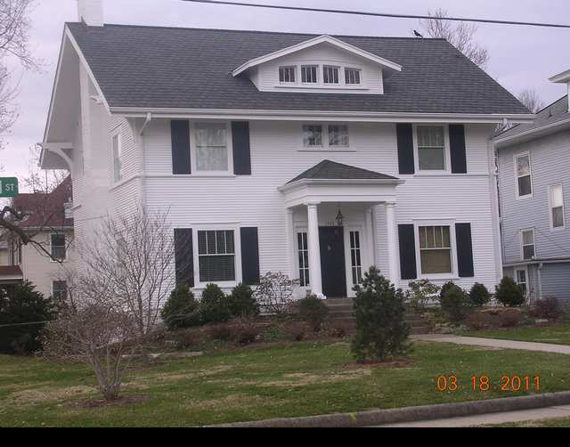

1325 E. Washington

- Dr. J.D. Cunningham Residence (1913). Cunningham was an osteopathic physician
- American Arts and Crafts style on a colonial floor plan, center hall
- Note 4 over 1 window sash, ¾ wall height siding call out-for horizontal emphasis, Doric Columns, and sidelights.